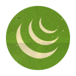
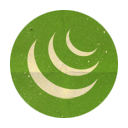
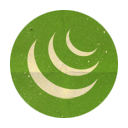
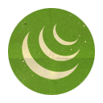

uprawiam ją czynnie od września 2000 roku, obecnie posiadam stopień Graduado w grupie Capoeira Camangula. Uczestnik krajowych oraz międzynarodowych wydarzeń związanych z capoeira, przez 5 lat prowadziłem zajęcia jako instruktor w założonym przez siebie Klubie Sportowym Capoeira w Olsztynie, który na chwilę obecną jest już samodzielnie działającym klubem.
uprawiam je od około 2007 roku. Startuję w amatorskich zawodach na szczeblu regionalnym i krajowym, przez 2 lata w olsztyńskim Berserkers Team oraz w Rio Grappling Club Wrocław. Do sukcesów należą między innymi:
Uprawnienia IRR instruktora survival a także samoobrona. Doświadczenie w pracy jako wychowawca kolonijny.